1. Yaff experiments on alpha quartz with the BKS potential¶
1.1. Introduction¶
This tutorial introduces some basic features of Yaff with the aid of relatively simple simulations using the BKS force field [BKS1990]. The files needed for this tutorial are distributed with the source code of Yaff in the directory data/examples/001_toturial_bks. This tutorial assumes that you have successfuly installed Yaff. (See Installation for more details.)
A copy of the latest source code with the examples can be obtained with the following commands:
git clone git://github.com/molmod/yaff.git
cd yaff/data/examples/001_tutorial_bks
The directory data/examples/001_toturial_bks contains three directories (init, opt and nvt) and a file bks.pot. The latter contains the parameters of the BKS force field. The init directory just contains a script and some input data to set up the initial structure of alpha quartz. The directories opt and nvt each contain a simulation script (simulation.py) and an analysis script (analysis.py). All scripts contain an abundant amount of comments to explain each step and the parameters that are used. The simulation script in the opt directory can be used to optimize the positions of the nuclei and/or the cell geometry. The corresponding analysis script can be used to fit the bulk modulus to a series of 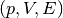 data points. The directory nvt contains a simulation script to run an NVT simulation on the quartz system. The analysis script computes the average pressure and the error on that average.
1.2. Preparation¶
In order to prepare an initial structure, run the script mksystem.py in the directory init:
cd init
python mksystem.py
This script uses data from the files rvecs.txt and struct.xyz to construct an initial state for the simulations in the following section. One may modify the scripts to construct alternative initial states.
1.3. Bulk modulus¶
The goal of the first assignment is to estimate the bulk modulus of quartz at 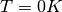 and an external pressure of 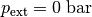. This result can be obtained in (at least) two ways, either by fitting a linear model to the 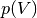 relation, or by fitting a quadratic model to the 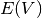 relation. More advanced approaches such as a fit to the Birch–Murnaghan equation of state or a direct computation of 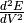 are also possible but are not discussed here for the sake of simplicity.
The script simulation.py in the directory opt can be used to optimize the structure of a quartz with a given external pressure. It uses the file init.chk from the directory init as the initial structure for the optimization. The script can be executed as follows: python simulation.py.
As a final result, the individual contributions to the total force field energy of the optimized system and the optimal cell volume are printed on screen. Run several tests to see which values for the parameters in the script simulation.py are suitable. The script creates several additional output files that can be used to analyze the optimization:
- traj.xyz: a trajectory file with the nuclear coordinates at each time step that can be visualized with Molden, VMD and many other programs, e.g. molden traj.xyz
- opt_energy.png: a figure with the energy contributions as function of the optimization step. This file can be viewed with the command display opt_energy.png.
- opt_cell.png: a figure with the cell parameters as function of the optimization step. This file can be viewed with the command display opt_cell.png.
- opt.chk: a file with the optimized structure.
Once an acceptable set of datapoints are obtained, these values can be added to the beginning of the script analysis.py. Run this script (python analysis.py) to perform the fitting procedure. Besides the screen output, two figures are generated: pv.png and ev.png, which contain your data and the fitted models. The data point with the smallest pressure (in absolute value) is used as the reference point for the fit.
If you are familiar with the Python language, it is worthwhile to add a loop over different external pressures in the script simulation.py. This makes it far easier to solve the problem. Furthermore, one further speed up one’s work flow by writing the essential output of simulation.py to a data file that can be read in the analysis.py script,
1.4. Thermal expansion¶
The volumetric thermal expansion in the limit of can be estimated with the following relation:
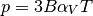
where  is the pressure,
is the pressure,  is the bulk modulus at ,
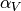 is the thermal expansion coefficient at and
is the bulk modulus at ,
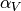 is the thermal expansion coefficient at and
 is the temperature. The bulk modulus from the previous section can be
used. The goal of this section is to estimate for quartz from
several 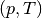 data points obtained with NVT molecular dynamics
simulations. The NVT simulations use the fixed optimized cell parameters from
the structure optimization at . (See previous section.)
is the temperature. The bulk modulus from the previous section can be
used. The goal of this section is to estimate for quartz from
several 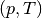 data points obtained with NVT molecular dynamics
simulations. The NVT simulations use the fixed optimized cell parameters from
the structure optimization at . (See previous section.)
The script simulation.py in the directory nvt performs an NVT simulation, using the optimized cell from the previous section as initial structure. (Both the nuclear coordinates and the cell parameters from the optimization are used. The cell parameters do not change during an NVT simulation.) The script is executed as follows:
python simulations.py 300 500
The two parameters are the temperature of the thermostat and the number of simulation steps, respectively. The script contains several parameters that one may tune to obtain decent results. Especially the choice of the thermostat is important for the statistical efficiency of the ensemble average of the pressure. By commenting/uncommenting the appropriate lines in the script, one may select one of the following thermostats:
- The Andersen thermostat. In this algorithm, the nuclear velocities are regularly reseted at random values from the Maxwell-Boltzmann distribution.
- The Langevin thermostat. In this algorithm, the nuclei are slowed down by a uniform friction coefficient and accelerated by additional random nuclear forces (collisions with an external bath). Both effects are in equilibrium at the requested temperature. The two main parameters are the temperature (obviously) and a time constant that determines the time horizon of the nuclear motion.
- The Nosé-Hoover chains (NHC) thermostat. This method couples the nuclear motion to a fictitious degree of freedom that represents the heat bath. The equations of motion only deviate very mildly from the regular Newton equations of motion. Just like the Langevin thermostat, this thermostat is controlled mainly by two parameters: the temperature and a time constant.
The script simulation.py generates the following output files, where NNNN is the temperature and MMMMMM is the number of iterations in the Verlet algorithm:
- traj_NNNN_MMMMMM.xyz. This can be used to visualize the time-dependent nuclear positions, e.g. with VMD.
- traj_NNNN_MMMMMM.h5. This a binary trajectory file (similar to traj_NNNN_MMMMMM.xyz) that contains all time-dependent information from the NVT simulation. It is used for the post processing of the simulation. One may request the contents of such file with h5dump -n traj_NNNN_MMMMMM.h5.
- ener_NNNN_MMMMMM.png. This is a plot with the time dependent energies.
- temp_NNNN_MMMMMM.png. This is a plot with the time temperature.
- press_NNNN_MMMMMM.png. This is a plot with the time pressure.
The script analysis.py computes the average pressure and the error on the average using the block-average method. The script is executed as follows:
python analysis.py 300 500 20
where the three parameters are the temperature, the length of the simulation and the number of initial steps to be omitted from the analysis. (Some initial data points should be omitted because the first part of the simulation consists of an equilibration period that is not suitable for the computation of ensemble averages.) This script also generates a plot with the normalized time correlation function of the pressure and the fitting results of the block average method. (See ac_NNNN_MMMMMM.png and blav_NNNN_MMMMMM.png.)
Feel free to modify both scripts in order to obtain the results as efficiently as possible. The NVT simulations may take a few minutes, especially when longer runs are requested. In those cases it is recommended to submit the simulations on a queuing system.
1.5. References¶
| [BKS1990] | van Beest, B. W. H., Kramer, G. J. & van Santen, R. A. ‘Force fields for silicas and aluminophosphates based on ab initio calculations’. Phys. Rev. Lett. 64, 1955-1958 (1990). URL http://dx.doi.org/10.1103/PhysRevLett.64.1955. |